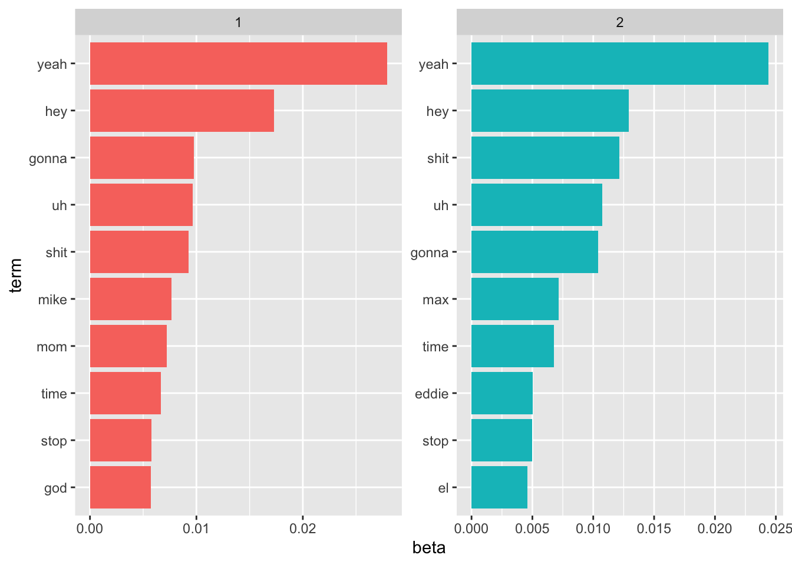
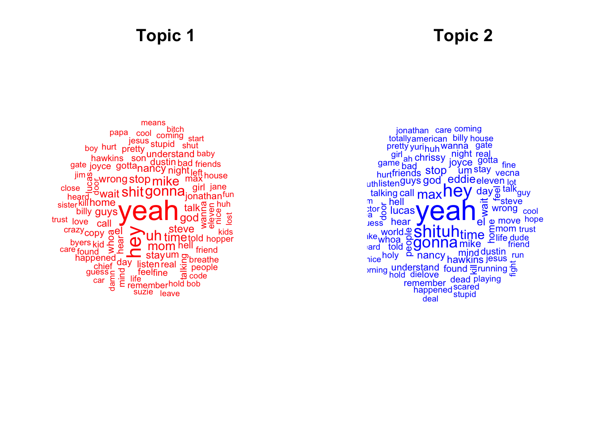
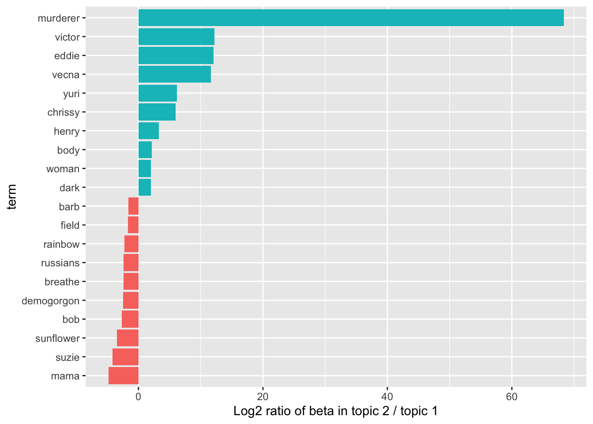

library(tidyverse)
stranger_things_text <-
read_csv('https://raw.githubusercontent.com/rfordatascience/tidytuesday/master/data/2022/2022-10-18/stranger_things_all_dialogue.csv') |>
# Drop any lines with missing dialogue
filter(!is.na(dialogue))Demo 15: Topic Models
The Dialogue of Stranger Things
In this demo we’ll work with the dialogue from Stranger Things, which is available from TidyTuesday:
TidyText processing of script
Similar to the previous demo, we need to pre-process the stranger_things_text dataset into a tokenized form. Again, we’ll use the tidytext package to convert the dialogue column into individual words as the tokens.
Before we do that, let’s take a look at the Stranger Things dataset:
head(stranger_things_text)# A tibble: 6 × 8
season episode line raw_text stage_direction dialogue start_time end_time
<dbl> <dbl> <dbl> <chr> <chr> <chr> <time> <time>
1 1 1 9 [Mike] Some… [Mike] Somethi… 01'44" 01'48"
2 1 1 10 A shadow gr… <NA> A shado… 01'48" 01'52"
3 1 1 11 -It is almo… <NA> It is a… 01'52" 01'54"
4 1 1 12 What if it'… <NA> What if… 01'54" 01'56"
5 1 1 13 Oh, Jesus, … <NA> Oh, Jes… 01'56" 01'59"
6 1 1 14 It's not th… <NA> It's no… 01'59" 02'00" For our purposes in this demo, we will treat each episode as a “document”. Because the numeric values in the episode column are not unique across seasons, we need to create a unique episode ID column. One simple way to do this is with the unite() function that comes loaded with the tidyverse (in the tidyr package). We’ll use this function to create an episode_id column that is the result of simply pasting the season and episode columns together with some specified delimiter. Afterwards, we will only keep the season, episode_id, and dialogue columns.
stranger_things_text <- stranger_things_text |>
# Use the unite function
unite("episode_id", season:episode,
# Keep the columns we're merging
remove = FALSE,
# Use the default separator:
sep = "_") |>
dplyr::select(season, episode_id, dialogue)Now we’ll use unnest_tokens() function to break each dialogue line into words We specify what the new column will be called, word, given the source of the text, which is dialogue here:
library(tidytext)Warning: package 'tidytext' was built under R version 4.2.3stranger_things_words <- stranger_things_text |>
unnest_tokens(word, dialogue)
# View the first so many rows:
head(stranger_things_words)# A tibble: 6 × 3
season episode_id word
<dbl> <chr> <chr>
1 1 1_1 something
2 1 1_1 is
3 1 1_1 coming
4 1 1_1 something
5 1 1_1 hungry
6 1 1_1 for Each row of stranger_things_words corresponds to a single word in the dialogue for a particular episode in the show (during a single line, but we dropped that identifier). We can see that season and episode_id columns are still preserved in the data, but now the dialogue column has been broken up into thousands of rows. By default, punctuation marks are removed and all of the text is converted to lower case.
Before we continue to explore this dataset, we remove stop words but will NOT apply stemming. With topic models, stemming is not recommended due to issues that may arise in the generic stemming procedures.
We load a table of stop words and simply filter them out from our data:
# load stop words in the tidytext package
data(stop_words)
# Next we can use the filter function to remove all stop words:
stranger_things_words <- stranger_things_words |>
filter(!(word %in% stop_words$word))
# Alternatively, we can do this with the anti_join function:
# stranger_things_words <- stranger_things_words |>
# anti_join(stop_words)Using our usual tidyverse syntax, we will compute the frequency of each word in each episode:
st_episode_word_summary <- stranger_things_words |>
# While we technically don't need the season column here, we'll just keep it
# for reference to have for later:
group_by(season, episode_id, word) |>
# Summarize with the count function:
count() |>
# Ungroup
ungroup()Topic modeling
Latent Dirichlet allocation
Latent Dirichlet Allocation (LDA) is one of the most common algorithms for topic modeling. Without diving into the math behind the model, we can understand it as being guided by two principles:
Every document is a mixture of topics: We imagine that each document may contain words from several topics in particular proportions. For example, in a two-topic model we could say “Document 1 is 90% topic A and 10% topic B, while Document 2 is 30% topic A and 70% topic B.”
Every topic is a mixture of words: For example, we could imagine a two-topic model of American news, with one topic for “politics” and one for “entertainment.” The most common words in the politics topic might be “President”, “Congress”, and “government”, while the entertainment topic may be made up of words such as “movies”, “television”, and “actor”. Importantly, words can be shared between topics; a word like “budget” might appear in both equally.
LDA is a mathematical method for estimating both of these at the same time: finding the mixture of words that is associated with each topic, while also determining the mixture of topics that describes each document. There are a number of existing implementations of this algorithm, and we’ll explore one of them in depth.
The most common R package for implementing topic models is called, unsurprisingly, topicmodels. However, the topicmodels package requires a DocumentTermMatrix object. To address this, we can use tidytext’s cast_dtm() function on our st_episode_word_summary table from before - treating each episode as a separate document:
episode_dtm <- st_episode_word_summary |>
# Use the words
cast_dtm(episode_id, word, n)
episode_dtm<<DocumentTermMatrix (documents: 34, terms: 7226)>>
Non-/sparse entries: 22122/223562
Sparsity : 91%
Maximal term length: 27
Weighting : term frequency (tf)Notice that this summary output displays information about the matrix, reflecting the high sparsity (proportion of 0s) in the matrix at 91% - due to the high number of unique words/tokens (7226). We are being a bit lazy here, since numbers are included - but we could remove those if we wanted to.
Performing Latent Dirichlet Allocation (LDA) is actually really easy in R; we just use the LDA() function from the topicmodels package. For example, setting k = 2 creates a two-topic LDA model:
library(topicmodels)Warning: package 'topicmodels' was built under R version 4.2.3# set a seed so that the output of the model is predictable
st_lda <- LDA(episode_dtm, k = 2, control = list(seed = 1234))
st_ldaA LDA_VEM topic model with 2 topics.Almost any topic model in practice will use a larger k; we’re just using k = 2 as an example. But there are a variety of approaches for tuning k that are beyond the scope of this class.
Fitting the model was the easy part. The rest of the analysis will involve exploring and interpreting the model. The main thing you need to know is that the LDA() function gives you:
For each document, the proportion of each topic (there will be
k = 2of these for each document/episode). These proportions will be calledgamma.For each topic, the probability of a certain word occurring (there are 7226 words, so there will be 7226 of these for each topic). These probabilities will be called
beta.
Typically, it’s much more interesting to look at the second item (the probability of certain words occurring within a given topic) so we are going to focus on visualizing that below. We’ll discuss the first item afterwards.
Word-topic probabilities
The tidy() function within the tidytext package provides an easy way to extract the per-topic-per-word probabilities, called \(\beta\) (“beta”), from the model.
st_topics <- tidy(st_lda, matrix = "beta")
st_topics# A tibble: 14,452 × 3
topic term beta
<int> <chr> <dbl>
1 1 00 8.62e- 4
2 2 00 6.96e- 4
3 1 10 2.40e- 4
4 2 10 4.64e- 5
5 1 100 3.32e- 4
6 2 100 9.72e- 5
7 1 12 2.38e- 4
8 2 12 4.89e- 5
9 1 12.3 4.81e- 5
10 2 12.3 1.11e-90
# ℹ 14,442 more rows# note that these probabilities sum up to 1 within a given topic:
st_topics |>
filter(topic == 1) |>
pull(beta) |>
sum()[1] 1The above gives us a one-topic-per-term-per-row format. For each combination, the model computes the probability of that term being generated from that topic. For example, the token “00” has a \(8.6214123\times 10^{-4}\) probability of being generated from topic 1, but a \(6.9575687\times 10^{-4}\) probability of being generated from topic 2.
What are the most prevalent words in each topic? In other words, which words have the largest beta within each topic? To answer this question, we can use the top_n() function within the dplyr package to find the 10 terms that are most common within each topic:
# Grab the words with the top ten probabilities (betas), and then organize
# the data by topic, decreasing by beta
st_top_terms <- st_topics |>
group_by(topic) |>
top_n(10, beta) |>
ungroup() |>
arrange(topic, -beta)
st_top_terms# A tibble: 20 × 3
topic term beta
<int> <chr> <dbl>
1 1 yeah 0.0279
2 1 hey 0.0173
3 1 gonna 0.00976
4 1 uh 0.00967
5 1 shit 0.00926
6 1 mike 0.00767
7 1 mom 0.00721
8 1 time 0.00668
9 1 stop 0.00577
10 1 god 0.00572
11 2 yeah 0.0244
12 2 hey 0.0129
13 2 shit 0.0122
14 2 uh 0.0107
15 2 gonna 0.0104
16 2 max 0.00714
17 2 time 0.00679
18 2 eddie 0.00502
19 2 stop 0.00499
20 2 el 0.00457# Plot the data such that there is a plot for each topic, and the probabilities
# are in decreasing order. There are many ways to do this, and this is just one:
st_top_terms |>
mutate(term = reorder_within(term, beta, topic)) |>
ggplot(aes(term, beta, fill = factor(topic))) +
geom_col(show.legend = FALSE) +
facet_wrap(~ topic, scales = "free") +
coord_flip() +
scale_x_reordered()
This visualization attempts to help us understand the two topics that were extracted from the episodes’ words. Obviously, there is noticeable overlap between these topics as both feature “yeah”, “hey”, “uh”, and other frequently used words across the show. This is an advantage of topic modeling as opposed to “hard clustering” methods: topics used in natural language could have some overlap in terms of words. (“Hard clustering” methods would force each word to be in a single topic, rather than letting there be overlap between topics.) But there are differences, such as “mom” and “mike” in Topic 1 versus “max” and “eddi” in Topic 2. This might hint at Topic 2 being associated with later seasons of the show - such as the rather long and verbose Season 4…
Note that we can also make a word cloud for each topic, where the \(\beta\)s act as the “frequency” for each word. As an example, the following code makes a word cloud for the first and second topics:
# Subset into different topics
topic1 <- st_topics |>
filter(topic == 1)
topic2 <- st_topics |>
filter(topic == 2)
library(wordcloud)Loading required package: RColorBrewerpar(mfrow = c(1, 2))
wordcloud(words = topic1$term, freq = topic1$beta,
random.order = FALSE,
max.words = 100,
col = "red",
scale=c(2,.5))
title(main = "Topic 1")
wordcloud(words = topic2$term, freq = topic2$beta,
random.order = FALSE,
max.words = 100,
col = "blue",
scale=c(2,.5))
title(main = "Topic 2")
The above visuals tell us which words are frequent within each topic, but they do not necessarily tell us what the most “important” words are in each topic. In other words: Are there words that occur frequently in one topic but not another topic?
To answer this question, let’s consider the terms that have the greatest difference in \(\beta\) between Topic 1 and Topic 2. This can be estimated based on the log ratio of the two: \(\log_2(\frac{\beta_2}{\beta_1})\) (a log ratio is useful because it makes the difference symmetric: \(\beta_2\) being twice as large leads to a log ratio of 1, while \(\beta_1\) being twice as large results in -1). To constrain it to a set of especially relevant words, we can filter for relatively common words, such as those that have a \(\beta\) greater than 1/1000 in at least one topic. (This is another threshold that is more an art than a science; in practice, you have to toy around with this threshold until you get a visual that seems to produce “conceptual separation” between the two topics.)
To get at this question, it’s useful to create a dataset where you have (for each word) the betas for each topic side by side, as well as their log-ratio. There are many ways to do this, but we opt to use the pivot_wider() function:
beta_spread <- st_topics |>
mutate(topic = paste0("topic", topic)) |>
pivot_wider(names_from = topic, values_from = beta) |>
filter(topic1 > .001 | topic2 > .001) |>
mutate(log_ratio = log2(topic2 / topic1)) |>
arrange(log_ratio)
beta_spread# A tibble: 213 × 4
term topic1 topic2 log_ratio
<chr> <dbl> <dbl> <dbl>
1 mama 0.00135 0.0000471 -4.84
2 suzie 0.00173 0.0000979 -4.14
3 sunflower 0.00101 0.0000922 -3.45
4 bob 0.00149 0.000231 -2.69
5 demogorgon 0.00105 0.000190 -2.47
6 breathe 0.00225 0.000429 -2.39
7 russians 0.00116 0.000225 -2.37
8 rainbow 0.00135 0.000279 -2.27
9 field 0.00109 0.000343 -1.66
10 barb 0.00129 0.000428 -1.59
# ℹ 203 more rowsAfter creating such a dataset, it can be helpful to make a plot with the log-ratio on the x-axis and words on the y-axis. Again we use the top_n() function to plot just the top 10 log-ratios in either direction (positive or negative):
beta_spread |>
group_by(direction = log_ratio > 0) |>
top_n(10, abs(log_ratio)) |>
ungroup() |>
mutate(term = reorder(term, log_ratio)) |>
ggplot(aes(term, log_ratio, fill = direction)) +
geom_col(show.legend = FALSE) +
labs(y = "Log2 ratio of beta in topic 2 / topic 1") +
coord_flip()
The way to interpret the above plot is that very positive values indicate that that word is relatively “important” for Topic 2, while very negative values indicate relative “importance” for Topic 1. We can see that the most important words in Topic 2 include words related to Season 4 of the show like “nina”, “yuri”, and “munson”. Topic 1 appears to be more characterized by words and names from the first three seasons like “barb” and “clark” (their teacher!). This type of analysis can help identify differences between topics.
Document-topic probabilities
Besides estimating each topic as a mixture of words, LDA also models each document as a mixture of topics. Similar to what we did in the previous section, we can examine the per-document-per-topic probabilities, called \(\gamma\) (“gamma”), with the matrix = "gamma" argument to tidy():
st_documents <- tidy(st_lda, matrix = "gamma")
st_documents# A tibble: 68 × 3
document topic gamma
<chr> <int> <dbl>
1 1_1 1 1.00
2 1_2 1 1.00
3 1_3 1 0.976
4 1_4 1 0.202
5 1_5 1 0.0000384
6 1_6 1 1.00
7 1_7 1 1.00
8 1_8 1 1.00
9 2_1 1 1.00
10 2_2 1 0.0000356
# ℹ 58 more rows# for example, look at the probabilities for the first episode in each season:
st_documents |>
filter(document %in% c("1_1", "2_1", "3_1", "4_1"))# A tibble: 8 × 3
document topic gamma
<chr> <int> <dbl>
1 1_1 1 1.00
2 2_1 1 1.00
3 3_1 1 1.00
4 4_1 1 0.0000218
5 1_1 2 0.0000337
6 2_1 2 0.0000368
7 3_1 2 0.0000400
8 4_1 2 1.00 Each of these values is an estimated proportion of words from that document that are generated from that topic. For example, the model estimates that basically 100% of the words in the first episode for seasons 1-3 (1_1, 2_1, 3_1) were generated from Topic 1. In comparison, the first episode in season 4 (4_1) displays the opposite behavior with 100% of the words from Topic 2.
Additional References and Resources for Other Text Topics
Word vectors, e.g., “King - Man + Woman = Queen”, text2vec package on GitHub
See this chapter in the Tidy Text Mining book on n-grams, correlations, etc
The Topic Modeling chapter of Tidy Text Mining